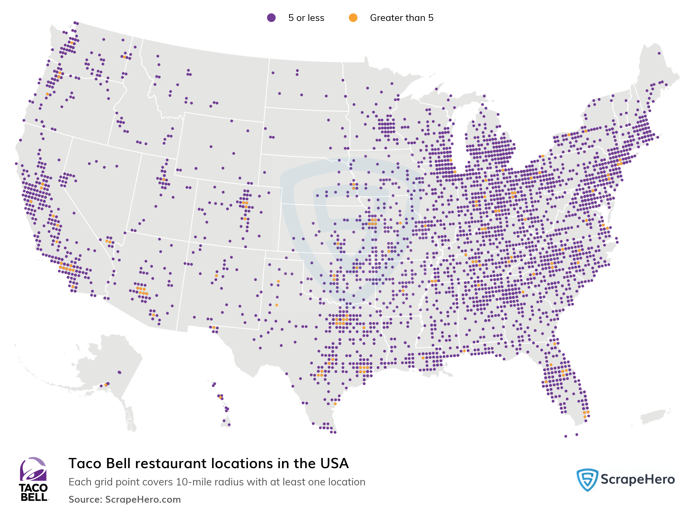

Locations:
In America there are estimated to be about 7,980 Taco Bell locations. Globally there are about 8,200+ locations worldwide. Their biggest competitors within the fast food competition are Subway, Starbucks, and McDonalds. Fun Fact: California has the most Taco Bell Locations within their state with an astounding amount of 878 spots. Meanwhile the city Houston has the most locations within their city at 64 spots. In Chattanooga there seems to be 9 Taco Bells in the area which are also located near Soddy Daisy.

Salary, Work Hours, etc.
The weekly work hours are around 8 - 40 hours depending on the location and the shift. These hours fluctuate as the Taco Bell can be open at different hours, usually it is open around 9am to 2am. They may give a 15 to 30 minute break too. This is with an entitled 30 minute lunch break ofcourse. An average salary per hour would be from 10 to 15 dollar range while getting moved up to a manager gets you from 15 to 20 an hour. This leads to getting around 26k yearly or 2.2k monthly.